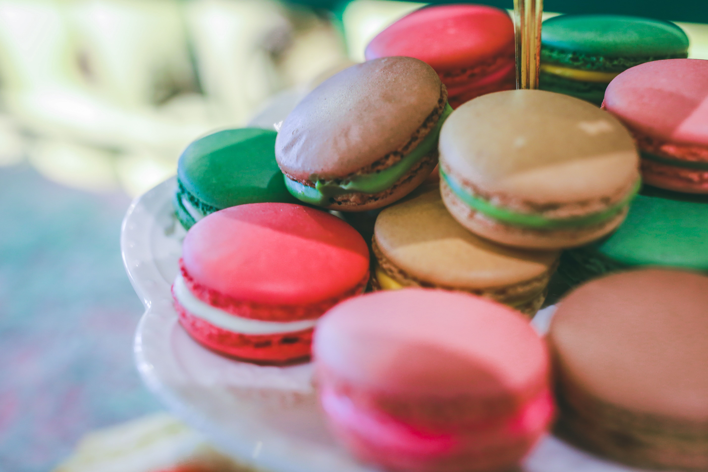

Feta Salmon Pasta
A delicious pasta dish made with feta cheese and salmon. Perfect for a quick and tasty dinner.
A small recipe collection
These are the three recipes I actually know how to cook and can vouch for, plus an easy birria taco recipe.
A delicious pasta dish made with feta cheese and salmon. Perfect for a quick and tasty dinner.

Sweet and chewy macarons that are perfect for impressing any guests who come knocking at your door.

A creamy and delicious chicken alfredo that is perfect for meal prep.
Slow cooker beef tacos, crisped with cheese and served with a rich consommé for dipping.